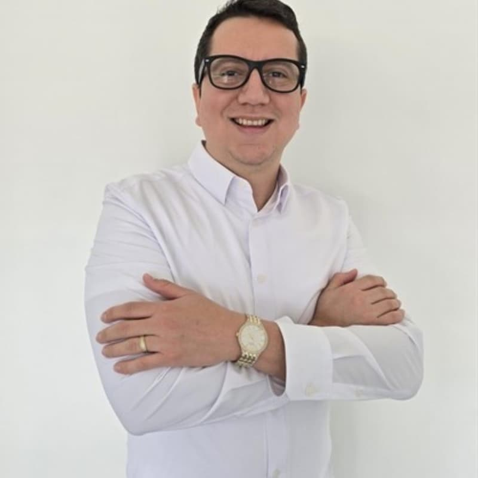

🏡
La Libertad
Residencial Costa del Pacífico
📍 La Libertad, El Salvador
$120K
Desde
~7%
Retorno est.
140m²
Hasta
Asesoría inmobiliaria para la diáspora salvadoreña en EE.UU. Proceso en español, sin costo de asesoría, equipo con red local probada.
En EE.UU., el jubilado promedio gasta una buena parte de su Social Security solo en gastos médicos de bolsillo. En El Salvador, ese mismo cheque te abre puertas que en US ya no existen.


Inversiones reales de clientes que confiaron en nuestro proceso. Cada caso incluye números verificables y autorización del cliente.
Profesionales con experiencia local y global. Un equipo bicontinental que conecta El Salvador con la diáspora en EE.UU.




Si tienes una pregunta que no está aquí, escríbenos por WhatsApp y te responde un asesor directamente.
Sin compromiso. Sin presión. Un asesor real te responde en español el mismo día.
Un asesor revisará tu consulta y te contactará en español por WhatsApp, llamada o videollamada dentro de 24 horas.
¿Prefiere respuesta inmediata?
Escríbenos por WhatsApp ahora.
Constructoras y proveedores de servicios complementarios verificados por nuestro equipo. Si te interesa contactar a alguno, hacelo directamente desde aquí.

Empresa con 16 años de experiencia en el sector. Su trayectoria incluye el desarrollo de gasolineras, construcción de viviendas, lotificaciones, edificios, topografías y remodelaciones, entre otros proyectos. Aliada estratégica de Next Level Demographic en el acompañamiento a inversores de la diáspora.
Tú tienes los proyectos. Nosotros tenemos acceso directo a 2.3M de salvadoreños en EE.UU. con poder adquisitivo y conexión emocional al país.